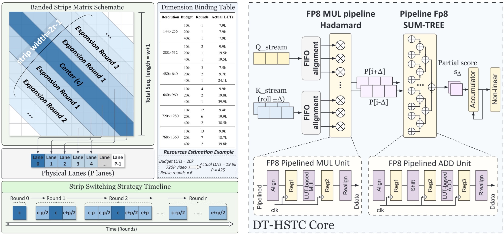
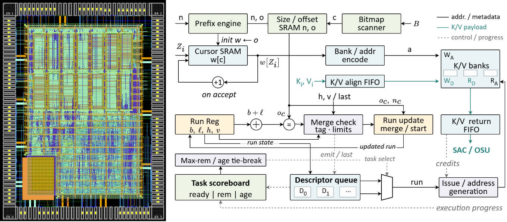
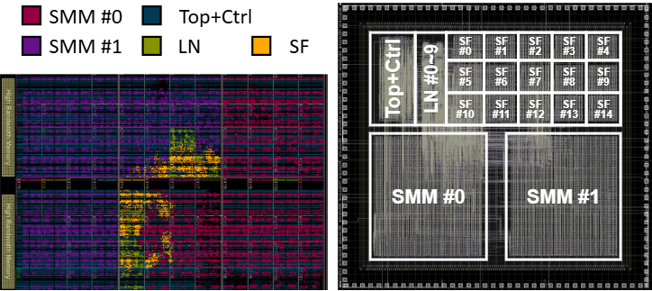
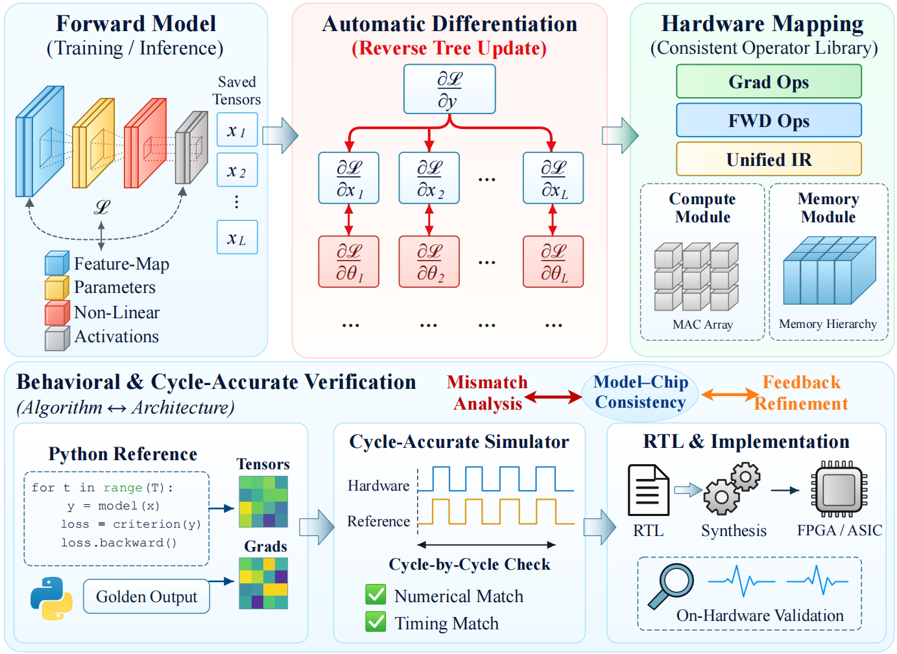

Graduate Research Intern
Duke University (remote)
Dynamic Semantic-Sparsity Acceleration for Video Diffusion Transformers
Jun. 2026 – Present
Supervised by Dr. Changchun Zhou
I am a final-year M.Eng. student in Microelectronics and Solid-State Electronics under the supervision of Prof. Sheng Chang at Wuhan University (WHU), where I received my B.Sc. in Physics in 2024. I currently work as a research intern with Dr. Changchun Zhou and am seeking Ph.D. opportunities for Fall 2027.
My research focuses on hardware–software co-design for efficient AI acceleration, with particular interests in SoC architectures, sparse and low-precision computing, and generative-model inference. My recent work explores efficient hardware for video diffusion Transformers, spanning semantic sparsity, FP8 and structured-sparse acceleration, FPGA/ASIC architectures, and model-to-chip design.




Visitor statistics are temporarily unavailable. View visitor details